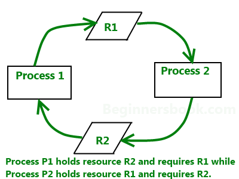

A deadlock is a condition wherein two or more tasks are waiting for each other in order to be finished but none of the task is willing to give up the resources that other task needs. In this situation no task ever gets finished and is in waiting state forever.

Coffman conditions
Coffman stated four conditions for a deadlock occurrence. A deadlock may occur if all the following conditions holds true.
- Mutual exclusion condition: There must be at least one resource that cannot be used by more than one process at a time.
- Hold and wait condition: A process that is holding a resource can request for additional resources that are being held by other processes in the system.
- No preemption condition: A resource cannot be forcibly taken from a process. Only the process can release a resource that is being held by it.
- Circular wait condition: A condition where one process is waiting for a resource that is being held by second process and second process is waiting for third process ….so on and the last process is waiting for the first process. Thus making a circular chain of waiting.
Deadlock Handling
Ignore the deadlock (Ostrich algorithm)
Did that made you laugh? You may be wondering how ignoring a deadlock can come under deadlock handling. But to let you know that the windows you are using on your PC, uses this approach of deadlock handling and that is reason sometimes it hangs up and you have to reboot it to get it working. Not only Windows but UNIX also uses this approach.
The question is why? Why instead of dealing with a deadlock they ignore it and why this is being called as Ostrich algorithm?
Well! Let me answer the second question first, This is known as Ostrich algorithm because in this approach we ignore the deadlock and pretends that it would never occur, just like Ostrich behavior “to stick one’s head in the sand and pretend there is no problem.”
Let’s discuss why we ignore it: When it is believed that deadlocks are very rare and cost of deadlock handling is higher, in that case ignoring is better solution than handling it. For example: Let’s take the operating system example – If the time requires handling the deadlock is higher than the time requires rebooting the windows then rebooting would be a preferred choice considering that deadlocks are very rare in windows.
Deadlock detection
Resource scheduler is one that keeps the track of resources allocated to and requested by processes. Thus, if there is a deadlock it is known to the resource scheduler. This is how a deadlock is detected.
Once a deadlock is detected it is being corrected by following methods:
- Terminating processes involved in deadlock: Terminating all the processes involved in deadlock or terminating process one by one until deadlock is resolved can be the solutions but both of these approaches are not good. Terminating all processes cost high and partial work done by processes gets lost. Terminating one by one takes lot of time because each time a process is terminated, it needs to check whether the deadlock is resolved or not. Thus, the best approach is considering process age and priority while terminating them during a deadlock condition.
- Resource Preemption: Another approach can be the preemption of resources and allocation of them to the other processes until the deadlock is resolved.
Deadlock prevention
We have learnt that if all the four Coffman conditions hold true then a deadlock occurs so preventing one or more of them could prevent the deadlock.
- Removing mutual exclusion: All resources must be sharable that means at a time more than one processes can get a hold of the resources. That approach is practically impossible.
- Removing hold and wait condition: This can be removed if the process acquires all the resources that are needed before starting out. Another way to remove this to enforce a rule of requesting resource when there are none in held by the process.
- Preemption of resources: Preemption of resources from a process can result in rollback and thus this needs to be avoided in order to maintain the consistency and stability of the system.
- Avoid circular wait condition: This can be avoided if the resources are maintained in a hierarchy and process can hold the resources in increasing order of precedence. This avoid circular wait. Another way of doing this to force one resource per process rule – A process can request for a resource once it releases the resource currently being held by it. This avoids the circular wait.
Deadlock Avoidance
Deadlock can be avoided if resources are allocated in such a way that it avoids the deadlock occurrence. There are two algorithms for deadlock avoidance.
- Wait/Die
- Wound/Wait
Here is the table representation of resource allocation for each algorithm. Both of these algorithms take process age into consideration while determining the best possible way of resource allocation for deadlock avoidance.
| Wait/Die | Wound/Wait | |
| Older process needs a resource held by younger process | Older process waits | Younger process dies |
| Younger process needs a resource held by older process | Younger process dies | Younger process waits |
Once of the famous deadlock avoidance algorithm is Banker’s algorithm
The tutorial you provide is so great.Thank you so much for that really!